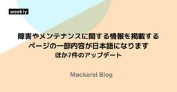

Mackerel ブログ #mackerelio
https://mackerel.io/ja/blog/
Mackerelからのお知らせです
フィード

ラベル付きメトリックの基盤移行に伴う障害についての詳細ご報告
Mackerel ブログ #mackerelio
2026年6月1日から2026年6月23日までの期間、Mackerelのラベル付きメトリック機能において断続的に複数の障害が発生し、ご迷惑とご心配をおかけいたしましたことを深くお詫び申し上げます。本事象の概要、原因、および今後の再発防止策についてご報告いたします。
2日前

障害やメンテナンスに関する情報を掲載するページの一部内容が日本語になります ほか7件のアップデート
Mackerel ブログ #mackerelio
こんにちは、Mackerel CREチームの五十嵐（ id:masarasi ）です。今回のアップデート内容をお知らせいたします。 障害やメンテナンスに関する情報を掲載するページの一部内容が日本語になります ステータスページのコンポーネントにラベル付きメトリックを追加しました トレースのservice.name属性が空の場合はunknown_serviceとして補完されるようになりました mkrでトレース情報の取得ができるようになりました mackerel-agentのAmazon Linux 2のサポートを終了しました ログ機能（β）に関するアップデート ログに付与されたOpenTeleme…
4日前

Mackerel利用規約およびプライバシーポリシーの改定について（Mackerel for KCPSご利用のユーザー様）
Mackerel ブログ #mackerelio
いつもMackerelをご利用いただきありがとうございます。2026年10月1日に、Mackerel for KCPS利用規約、およびMackerelプライバシーポリシーの改定を行います。改定内容についてお知らせします。 利用規約（Mackerel for KCPSユーザー様向け） プライバシーポリシー 利用規約（Mackerel for KCPSユーザー様向け） 第4条（個人情報及びデータ等の取扱い） 2項 「個人情報」の定義に「以下同じ。」を追記 6項 ユーザーデータに第三者の個人情報が含まれる場合の、同意取得義務に関する規定を追加 7項 第6項の新設に伴い、旧第6項の項番号を繰り下げ 第…
9日前
Mackerel利用規約およびプライバシーポリシーの改定について
Mackerel ブログ #mackerelio
いつもMackerelをご利用いただきありがとうございます。2026年10月1日に、Mackerel利用規約およびプライバシーポリシーの改定を行います。改定内容についてお知らせします。 利用規約 プライバシーポリシー 利用規約 第4条（個人情報及びデータ等の取扱い） 2項 「個人情報」の定義に「以下同じ。」を追記 6項 ユーザーデータに第三者の個人情報が含まれる場合の、同意取得義務に関する規定を追加 第4条（個人情報及びデータ等の取扱い）⑵ 当社によるユーザーの個人情報（個人情報の保護に関する法律第2条第1項に定める「個人情報」を意味します。以下同じ。）の取扱いについては、別途当社プライバシー…
9日前
PHPカンファレンス2026にプラチナスポンサーとして協賛しました！ #phpcon
Mackerel ブログ #mackerelio
Mackerelは、2026年7月20日（月・祝）に大田区産業プラザPiOで開催された「PHPカンファレンス2026」に、プラチナスポンサーとして協賛しました。 今回のMackerelブースでは、先日オープンβでの提供を開始した「Mackerelログ機能」のデモをはじめ、体験型コンテンツ「後出しジャンケン タイムアタック！」などの様々なコンテンツを通して、大変多くの来場者の方々と交流させていただきました。 この記事では当日のブースの様子をレポートします。 phpcon.php.gr.jp 目次 Mackerel ログ機能（オープンβ版）のご紹介 参加型コンテンツ「後出しジャンケン タイムアタッ…
10日前
ログとは？——システム運用での役割から、構造化ログの実践までわかりやすく解説
Mackerel ブログ #mackerelio
ログとは、システムの動作を時系列で記録した一次情報のこと。役割や構造化ログの基本から、オブザーバビリティ文脈での位置づけ、trace_idでトレースと相関させ障害調査を効率化する実践までをわかりやすく解説します。
11日前
MDOTでログに対応しました ほか2件のアップデート
Mackerel ブログ #mackerelio
こんにちは、Mackerel CREチームの高橋（ id:yohfee ）です。今回のアップデート内容をお知らせいたします。 MDOTでログに対応しました ブラウザの「進む」「戻る」でグラフの時間範囲を移動できるようになりました チェック監視の一覧を公開APIで取得できるようになりました 【再掲】Mackerelのログ機能をオープンβ版として公開しました！ MDOTでログに対応しました Mackerel Distro of OpenTelemetry (MDOT) コレクターにおいて、新たにログの送信に対応しました。 「OpenTelemetryで収集したログをMackerelでも見たい」とい…
17日前
RailsのログをMackerelに送る3つの方法
Mackerel ブログ #mackerelio
この記事では、Railsのログをトレースと紐付けながらMackerelに送る方法を、ファイル・Fluentd・CloudWatch Logsの3つの収集経路で紹介します
23日前
Mackerelのログ機能をオープンβ版として公開しました！
Mackerel ブログ #mackerelio
お待たせいたしました！本日2026年7月16日（木）、Mackerelのログ機能をオープンβ版として公開しました。 この機能でどのような課題を解こうとしているのかは、以前の事前告知記事にまとめています。 mackerel.io では、ご利用条件や機能の使い方、ログの送信方法、そして正式リリースに向けた今後の予定を順にご案内します。 目次 β版の対象とご利用条件 ご利用可能なアカウント β期間中の料金 利用開始までの手順 β期間中の制約 ログ機能でできること サービスからログを絞り込んで探す 1. サービスの選択 2. 検索したいメッセージの入力 3. ログレベルの選択 構造化ログを画面から絞り…
23日前
お盆休みのサポート窓口休業のお知らせ
Mackerel ブログ #mackerelio
誠に勝手ながら、以下の期間はサポート窓口を休業させていただきます。 休業期間 2026年8月10日（月）から 8月14日（金）まで お問い合わせへの対応について 休業期間中にいただいたお問い合わせは、8月17日（月）以降に順次対応いたします。 8月7日（金）までにいただいたお問い合わせにつきましても、内容によっては8月17日（月）以降の対応となる場合がございます。予めご了承ください。 ご不便をおかけいたしますが、ご理解のほどよろしくお願いいたします。
1ヶ月前
カスタムダッシュボードのグラフで表示する系列を選択できるようになりました ほか4件のアップデート
Mackerel ブログ #mackerelio
カスタムダッシュボードのグラフウィジェットの設定で、ホストグラフおよびサービスメトリックグラフについて表示する系列を選べるようになりました。
1ヶ月前
MackerelはPHPカンファレンス2026にプラチナスポンサーとして協賛します！ #phpcon
Mackerel ブログ #mackerelio
Mackerel は2026年7月20日（月・祝）に大田区産業プラザPiOで開催される「PHPカンファレンス2026」へプラチナスポンサーとして協賛します。
1ヶ月前
APMのHTTPサーバータブから、各ルートの詳細情報が確認できるようになりました ほか3件のアップデートのお知らせ
Mackerel ブログ #mackerelio
こんにちは。Mackerel チーム CRE の須藤（id:do-su-0805）です。今回のアップデート内容をお知らせします。 APMのHTTPサーバータブから、各ルートの詳細情報が確認できるようになりました 通知グループAPIの応答にデフォルト通知グループか判別できるカラムが増えました terraform-provider-mackerelを利用した通知チャンネル作成時にデフォルト通知グループへ追加されなくなりました mackerel-container-agentの動作環境としてKubernetes 1.36を追加しました ログ機能のオープンβを7月16日に公開します！ APMのHTTP…
1ヶ月前
2026年7月16日（木）にMackerelのログ機能をオープンβとして公開します——熟練者の知見を、チームの力に
Mackerel ブログ #mackerelio
今年の4月、Mackerelにログ機能を提供するお知らせをさせていただきました。記事の中では「2026年夏〜秋頃の公開を目指して現在進めています。」とお伝えしていましたが、オープンβとして2026年7月16日（木）に公開することになりました。 mackerel.io 正式な提供開始の前に、Mackerelのログ機能をβ版として実際に触っていただけるようになります。この記事ではβ版でどのようなことができるのか、そしてログ機能がどんなチームに役立つのかを、公開に先立ってご紹介します。 Mackerelのログ機能で私たちが解きたかった課題 ひとくちにログといっても、システムのイベントログやセキュリテ…
2ヶ月前
オブザーバビリティとは？——監視との違いと実践の第一歩をわかりやすく解説
Mackerel ブログ #mackerelio
「監視はしているのにオブザーバビリティが必要なのか？」——オブザーバビリティとは何か、監視との違い、主要なシグナルの役割、そして実践の第一歩まで基本からわかりやすく解説します。 目次 「オブザーバビリティ」って、監視と何が違うの？ オブザーバビリティとは何か なぜオブザーバビリティが注目されるのか オブザーバビリティを支える主要なシグナル 監視との違い・関係 オブザーバビリティを高めるための第一歩 オブザーバビリティ導入・定着のポイント Mackerelで実現する、インフラ監視から繋がるオブザーバビリティとAPM 「オブザーバビリティ」って、監視と何が違うの？ 「オブザーバビリティ」「可観測性…
2ヶ月前
退役したホストのアラートクローズ時に、OK 通知が送信されるようになりました ほか6件のアップデートのお知らせ
Mackerel ブログ #mackerelio
こんにちは。Mackerel チーム CRE の戸谷（id:KGA）です。今回のアップデート内容をお知らせします。 退役したホストのアラートクローズ時に、OK 通知が送信されるようになりました クエリグラフの全画面表示で、表示期間を変更しても系列の選択が保持されるようになりました Ubuntu 26.04 LTS (Resolute Raccoon) をサポート対象 OS に追加しました 各種プラグインのアップデート mackerel-plugin-nginx で TLS 証明書の検証をスキップできるようになりました mackerel-plugin-aws-ec2-ebs で CloudWat…
2ヶ月前
JJUG CCC 2026 Spring にブーススポンサーとして協賛しました！ #jjug_ccc
Mackerel ブログ #mackerelio
本記事では、2026年5月30（土）にベルサール新宿グランド コンファレンスセンターで開催されたJJUG CCC 2026 SpringにMackerelがブーススポンサーとして協賛した内容をお伝えします。
2ヶ月前
フロントエンドとバックエンドをトレースでつないで原因特定を簡単に！
Mackerel ブログ #mackerelio
この記事では、Mackerel APMとOpenTelemetryを用いて、フロントエンド・バックエンド間の一気通貫な分散トレーシングを実現し、パフォーマンス調査を迅速化する手法を解説します。ユーザー操作に紐づくコンテキスト伝搬と属性による集計を活用することで、具体的なソースコードを読み解かなくてもボトルネックを特定するプロセスを紹介します。
2ヶ月前
AWSインテグレーションのAmazon Connect連携で、タグによるホストの絞り込みができるようになりました ほか6件のアップデート
Mackerel ブログ #mackerelio
こんにちは！Mackerel チーム CRE の五十嵐（id:masarasi）です。今回のアップデート内容をお知らせいたします。 AWSインテグレーションのAmazon Connect連携で、タグによるホストの絞り込みができるようになりました 通知チャンネルの登録APIで、デフォルト通知グループへ追加するかどうかを選べるようになりました 通知グループの通知対象に指定する監視ルールの一覧で、しばらく投稿のないチェック監視を候補に表示しないようにしました メトリックエクスプローラーの表示速度を改善しました Slack通知のデザインを変更しました 補足：Slackチャンネルの通知先をSlack以外…
2ヶ月前
Mackerel は JJUG CCC 2026 Spring にブーススポンサーとして協賛します！ #jjug_ccc
Mackerel ブログ #mackerelio
Mackerel は2026年5月30日（土）にベルサール新宿グランドで開催される「JJUG CCC 2026 Spring」へブーススポンサーとして協賛します。
3ヶ月前
【AI活用事例】アラートと運用知見から始める自律的なインシデント調査への第一歩
Mackerel ブログ #mackerelio
Mackerel SRE チームが取り組んでいる、AI エージェントフレームワークを活用したアラート調査の自動化事例をご紹介します。アラート発生時の初動調査を AI に任せることで、運用の負担をどう軽減し、チームの動きがどう変化したのか。実装の全体構成や、精度を高めるための具体的な工夫、そして運用を通じて見えてきた新たな課題について解説します。
3ヶ月前
AWS インテグレーションの RDS のホスト詳細で、Amazon Aurora のメタデータを追加しました 他5件のアップデート
Mackerel ブログ #mackerelio
こんにちは！Mackerel チーム CRE の髙橋（id:yohfee）です。今回のアップデート内容をお知らせいたします。 AWS インテグレーションの RDS のホスト詳細で、Amazon Aurora のメタデータを追加しました AWS インテグレーションの Step Functions で、メトリック取得を改善しました Web コンソールでオーガニゼーショングループの SAML セッション有効期限を設定できるようになりました mackerel-agent の Oracle Linux 10 サポートを追加しました mackerel-container-agent の Kubernete…
3ヶ月前
Mackerel は「クラウドネイティブ会議」にツールスポンサーとして協賛します（2026年5月14日〜15日・名古屋で開催）
Mackerel ブログ #mackerelio
2026年5月14日（木）・15日（金）に中日ホール&カンファレンスで開催される クラウドネイティブ会議 に Mackerel は 「ツールスポンサー」として協賛します。
3ヶ月前
分散トレーシングとは？——仕組みから活用場面までわかりやすく解説
Mackerel ブログ #mackerelio
「アプリが遅い、でもどの処理がボトルネックかわからない」——そんなときに役立つのがトレーシングです。マイクロサービスや複数システムの連携が当たり前になった現在、サービス境界を越えてリクエストの流れを追跡する「分散トレーシング」の重要性がますます高まっています。この記事では、その基本的な仕組みや活用場面をわかりやすく解説します。
3ヶ月前
外形監視がIPv6に対応しました ほか10件のアップデート
Mackerel ブログ #mackerelio
Mackerelの外形監視がIPv6に対応しました。外形監視の設定画面下部にある「IPバージョン」で、利用するバージョンを選択できます。
4ヶ月前
PHPカンファレンス小田原2026にスポンサー協賛しました！ #phpcon_odawara
Mackerel ブログ #mackerelio
Mackerelは2026年4月11日（土）に小田原市民交流センター「UMECO」で開催されたPHPカンファレンス小田原2026に企業スポンサーとして参加しました。この記事では当日のブースやスポンサーLT登壇の様子をレポートします。 phpcon-odawara.jp Mackerelブースのご紹介 Mackerelブースでは、デモやアンケートをご用意。PHPのLaravelフレームワークで構築したアプリケーションを題材に、フロントエンドからバックエンドまでの流れをAPMで可視化し、公式のOpenTelemetry対応外であるPHP 7.4に対してもOBIや実験的実装で対応していることもご覧い…
4ヶ月前
【重要】Mackerel WebコンソールおよびAPIエンドポイントのIPv6対応と、それに伴う「IP制限」機能の設定確認のお願い
Mackerel ブログ #mackerelio
いつもMackerelをご利用いただきありがとうございます。 現在MackerelではIPv6への対応を進めております。先日、外形監視のIPv6対応についてお知らせしましたが、今回はMackerelのWebコンソールおよびAPIエンドポイントのIPv6対応のご案内となります。 2026年5月21日（木）より、お客様の環境からMackerelのWebコンソールやAPIエンドポイントに対して、IPv6でアクセス可能になります。これに伴い、オーガニゼーション設定の「IP制限」機能をご利用の場合に、お客様のネットワーク環境によっては、現在の設定のままではリリース日以降にMackerelへアクセスできな…
4ヶ月前
メトリックエクスプローラーにて高カーディナリティなメトリックの探索性を向上しました ほか4件のアップデート
Mackerel ブログ #mackerelio
こんにちは！Mackerel チーム CRE の須藤（id:do-su-0805）です。今回のアップデート内容をお知らせいたします。 メトリックエクスプローラーにて高カーディナリティなメトリックの探索性を向上しました トレース・スパンの時刻に関する表示がミリ秒まで含めて示されるようになりました APMの統計情報をエクスポートした際のファイル名や内容に表示期間が含まれるようになりました mackerel-container-agentの動作環境として Kubernetes 1.35を追加しました 【予告】SAML認証を利用したログインセッションの有効期限として、SessionNotOnOrAft…
4ヶ月前
熟練者の知見を、チームの力に——Mackerelログ機能への思い
Mackerel ブログ #mackerelio
こんにちは。Mackerelチームでサブディレクターを務め、プロダクトマネジメントを担当している id:RyuGoo です。 MackerelはOpenTelemetry形式のメトリックやトレースを取り扱うことができます。さらにオブザーバビリティを強化すべく、これらに加えてログを扱える新機能の開発を、2026年夏〜秋頃の公開を目指して現在進めています。 この記事では現在開発中の「Mackerelログ機能」について、その背景にある思いをお伝えしたいと思います。 どのような人のためのログ機能なのか チームのためのログ チームで使える、チームで再現できる 最初に提供しようと考えている体験と機能 サー…
4ヶ月前
OpenTelemetryとは？——概要から導入メリットまでわかりやすく解説
Mackerel ブログ #mackerelio
OpenTelemetryはシステムの可観測性を高めるフレームワークです。テレメトリーデータを標準化して生成・収集し、ベンダーロックインを回避して柔軟にデータを扱えます。
4ヶ月前